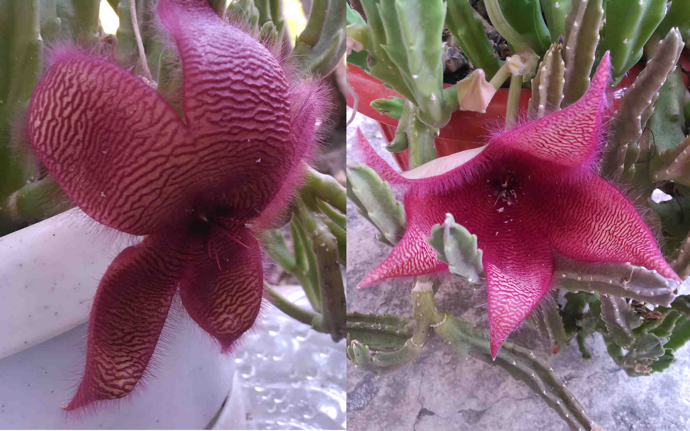
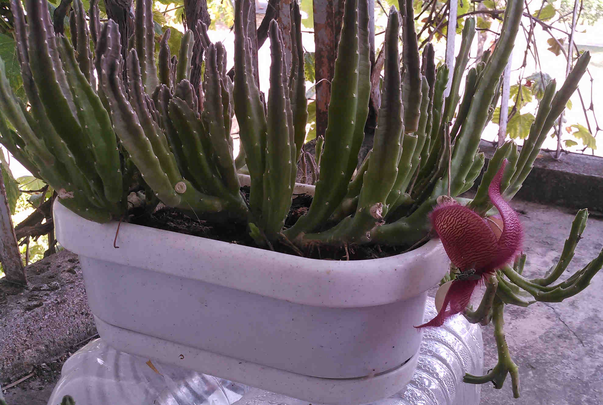
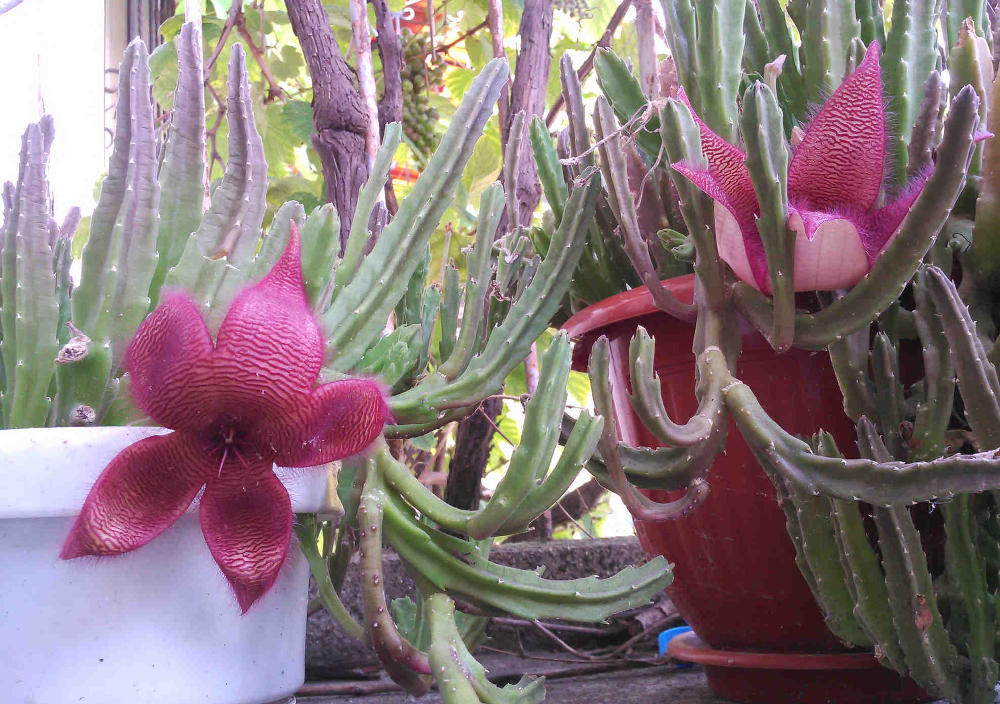

Look at me - I'm growing weeds, and I'm proud of it!

Если ваша первая мысль "Ухты цветки прямиком из фентези", значит вы никогда не видели живой стапелии. Смотрите намёк на следующей картинке.
If your first thought was "Wow this kind of flower belongs in fantasy", then you've never seen live stapelia. The next picture should give you the hint.

Правильная мысль: "У меня будет много новых друзей".
The right first thought: I'm gonna make allot of new friends.

Какой запах? А - это моя стапелия! Нет, я не видел вашей кошки.
What odor? Oh - that's my stapelia! No, I haven't seen your cat.